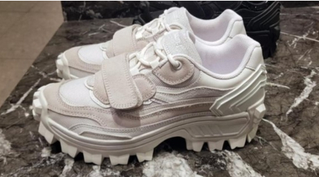
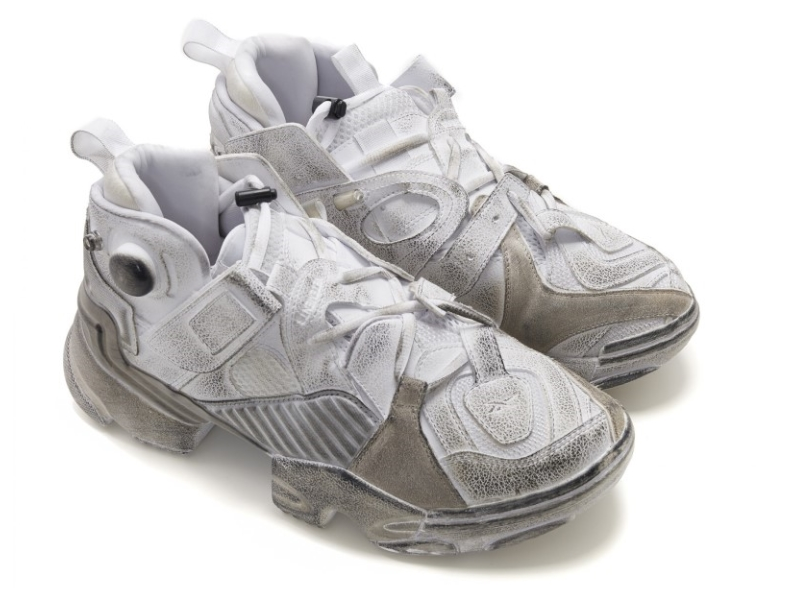

UGLY SHOES
요즘은 못생긴 게 트렌드다. 이른바 ‘어글리 프리티(Ugly Pretty)’.
복고 패션에 이어 아노락과 같은 스포티한 아재 패션템이 인기를 얻기 시작하더니,
최근엔 투박하고 ‘못생긴’ 스니커즈가 트렌드로 떠오르고 있는 것.
이번에도 그 시작은 ‘발렌시아가’인데, 지난해 히트템 ‘양말 스니커즈’에 이어
이번엔 어글리 슈즈를 출시해 국내외 셀럽들의 사랑을 듬뿍 받고 있다.
어글리슈즈는 말그대로 못생긴신발 대디신발 투박한 외관 과장된 아웃솔 촌스럽고 지저분한 디자인